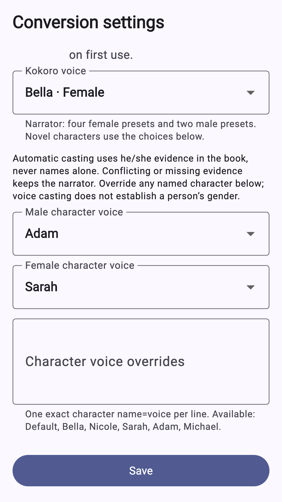
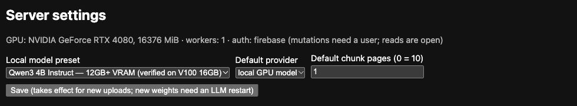

<!doctype html><html lang="en"><meta charset="utf-8"><title>Firebrat · Listening campaign</title><link rel="preconnect" href="https://fonts.googleapis.com"><link rel="preconnect" href="https://fonts.gstatic.com" crossorigin><link href="https://fonts.googleapis.com/css2?family=Sora:wght@600;700;800&family=Outfit:wght@600;700&family=Inter:wght@400;500;600&display=swap" rel="stylesheet"><style>
*{box-sizing:border-box}html,body{margin:0;width:1080px;height:1920px;overflow:hidden;background:#100d28;color:#fff;font-family:'Inter',Arial,Helvetica,sans-serif}main{position:relative;width:1080px;height:1920px;overflow:hidden;background:radial-gradient(ellipse at 95% 65%,#483361 0,transparent 55%),linear-gradient(150deg,#111029,#21163d 70%,#352442)}main:after{content:'';position:absolute;width:950px;height:950px;border:1px solid #c1a7fb18;border-radius:50%;left:520px;top:850px;pointer-events:none}.brand{position:absolute;left:72px;top:68px;display:flex;align-items:center;gap:18px;font-family:'Sora','Outfit',Arial,sans-serif;font-size:35px;font-weight:700;letter-spacing:-1px}.mark{height:43px;display:flex;align-items:center;gap:5px}.mark i{display:block;width:6px;border-radius:8px;background:#ffc69b}.mark i:nth-child(1),.mark i:nth-child(5){height:15px}.mark i:nth-child(2),.mark i:nth-child(4){height:29px}.mark i:nth-child(3){height:43px}.number{position:absolute;right:72px;top:80px;font-size:22px;letter-spacing:3px;color:#a89cbe}.intro{position:absolute;top:188px;left:72px;right:65px;z-index:3}.eyebrow{font-size:23px;letter-spacing:4px;font-weight:bold;color:#ffc69b;text-transform:uppercase;margin-bottom:26px}h1{font-family:'Sora','Outfit',Arial,sans-serif;font-size:96px;line-height:1.035;letter-spacing:-5px;margin:0;font-weight:750}h1 em{font-style:normal;color:#ffc69b}.sub{font-size:34px;line-height:1.45;color:#d7cce9;max-width:870px;margin-top:28px}.fine{position:absolute;bottom:60px;left:72px;right:72px;font-size:23px;line-height:1.45;color:#c6b8d5;z-index:4}.fine b{display:block;color:#fff;font-size:28px;margin-bottom:7px}.phone{position:absolute;background:#100f1b;border:12px solid #353044;border-radius:53px;overflow:hidden;box-shadow:0 40px 100px #0008;z-index:2}.phone .screen{width:100%;height:100%;overflow:hidden;border-radius:36px;background:#faf7ff;position:relative}.phone img{display:block;width:100%}.phone .screen::after{content:'';position:absolute;left:0;right:0;bottom:0;height:190px;background:linear-gradient(transparent,#faf7ff);border-radius:0 0 36px 36px;pointer-events:none}.reader img{position:absolute;top:-52px}.pair .phone{width:450px;height:990px;top:700px}.pair .left{left:65px;transform:rotate(-3deg)}.pair .right{right:65px;transform:rotate(3deg)}.wave{position:absolute;display:flex;gap:12px;align-items:center;height:140px;opacity:.65;z-index:1}.wave span{width:9px;background:linear-gradient(#ffc496,#a38cf5);border-radius:9px}.panel{position:absolute;left:72px;right:72px;border-radius:30px;padding:30px;background:#f9f6ff;box-shadow:0 30px 90px #0005;overflow:hidden;color:#211832;z-index:2}.label{font-size:22px;letter-spacing:2px;text-transform:uppercase;color:#9b8bb7;margin-bottom:25px}.voice-crop{height:790px;overflow:hidden;border-radius:12px;position:relative;-webkit-mask-image:linear-gradient(black 75%,transparent);mask-image:linear-gradient(black 75%,transparent)}.voice-crop img{width:100%;position:absolute;top:-170px;transform:scale(1.08);transform-origin:top center}.statrow{position:absolute;left:72px;right:72px;display:flex;gap:20px;z-index:2}.stat{flex:1;padding:32px;border-radius:24px;background:#ffffff0b;border:1px solid #ffffff15;font-size:25px;line-height:1.4;color:#d7cce9}.stat strong{display:block;font-family:'Sora','Outfit',Arial,sans-serif;font-size:34px;color:#ffc69b;margin-bottom:10px}.laptop{position:absolute;top:735px;left:54px;width:972px;border:14px solid #635973;border-radius:24px;background:#111;box-shadow:0 45px 90px #0006,0 0 120px #a38cf55e;z-index:2}.browserbar{height:48px;background:#272330;display:flex;align-items:center;padding:0 18px;gap:8px;color:#b4a9c2;font-size:18px}.dot{width:10px;height:10px;border-radius:50%;background:#81728e}.browserbar b{margin-left:20px;font-weight:normal}.desktop-content{padding:24px 10px 20px}.desktop-content img{display:block;width:100%;margin:0;filter:brightness(1.06)}.desktop-content img:last-child{margin:0}.laptop:after{content:'';height:18px;background:#9a8fa8;border-radius:0 0 90px 90px;position:absolute;bottom:-32px;left:-20px;right:-20px}.steps{position:absolute;top:1420px;left:72px;right:72px;display:flex;gap:15px}.step{flex:1;border-top:2px solid #ffc69b70;padding-top:22px;font-size:25px;color:#ded4ee}.step small{display:block;font-size:19px;color:#ffc69b;margin-bottom:14px}.hero-art{position:absolute;width:1450px;max-width:none;height:725px;object-fit:cover;left:-120px;top:920px;opacity:.8;mask-image:linear-gradient(transparent,black 18%,black 78%,transparent)}.hero-reader{left:292px;top:670px;width:496px;height:1070px}.promo-note{position:absolute;font-size:20px;letter-spacing:2px;text-transform:uppercase;color:#bfb1d6;z-index:5}.feature .promo-note{right:28px;bottom:22px;left:auto;font-size:15px;letter-spacing:1.5px;color:#cfc2e4;text-shadow:0 2px 8px #000}.feature{width:1024px;height:500px;background:#09091c}.feature .art{position:absolute;inset:0;width:1024px;height:512px;object-fit:cover}.feature .shade{position:absolute;inset:0;background:linear-gradient(90deg,#09091d 0%,#09091de8 23%,#09091d80 46%,transparent 65%)}.feature .brand{left:54px;top:35px;font-size:27px;gap:12px}.feature .mark{transform:scale(.7);transform-origin:left center;margin-right:-10px}.feature h1{position:absolute;left:54px;top:132px;font-size:59px;line-height:1.04;letter-spacing:-2px}.feature .tag{position:absolute;left:56px;bottom:43px;color:#dfd4ed;font-size:20px}.feature:after{display:none}
</style><main id="canvas"></main><script>
const mark='<div class="mark"><i></i><i></i><i></i><i></i><i></i></div>';
const brand='<div class="brand">'+mark+'Firebrat</div>';
const phone=(img,cls,style)=>`<div class="phone ${cls||''}" style="${style||''}"><div class="screen"></div></div>`;
const wave=(x,y)=>`<div class="wave" style="left:${x}px;top:${y}px">${[20,40,65,100,130,85,55,105,140,90,50,28].map(n=>`<span style="height:${n}px"></span>`).join('')}</div>`;
const intro=(eye,title,sub)=>`<div class="intro"><div class="eyebrow">${eye}</div><h1>${title}</h1><div class="sub">${sub}</div></div>`;
const fine=(a,b)=>`<div class="fine"><b>${a}</b>${b}</div>`;
const cards={
1:intro('Your books. A new way in.','Free your eyes.<br><em>Let the story speak.</em>','Turn your own PDFs into narrated books.<br>Listen, follow along, or simply press play.')+''+'<div class="promo-note" style="left:72px;top:610px">Promo illustration · Reader screenshot is actual UI</div>'+phone('reader-playback.png','reader hero-reader')+wave(65,1040)+wave(820,1250)+fine('A world of listening, in your pocket.','Actual Firebrat reader · Public-domain sample'),
2:intro('Audio meets the page','Listen to the words.<br><em>Keep the pictures.</em>','Follow the narration with its visuals.<br>Open the original PDF whenever you need it.')+'<div class="pair">'+phone('reader-playback.png','reader left')+phone('source-pdf.png','reader right')+'</div>'+fine('Stories, figures and source pages together.','Actual Android reader and PDF viewer · Public-domain sample'),
3:intro('Find your narrator','A voice for<br><em>every story.</em>','Choose male and female voice presets.<br>Give novel characters their own sound.')+'<div class="panel" style="top:730px"><div class="label" style="color:#66537c">Actual Android voice settings</div><div class="voice-crop"></div></div>'+fine('Listen your way.','Kokoro voice data downloads first · English voice presets<br>Review automatic character casting and adjust it yourself.'),
4:intro('On your terms','Your books.<br><em>Your quiet escape.</em>','Play downloaded books offline.<br>Convert on supported Android devices, too.')+phone('offline-settings.png','', 'left:240px;top:680px;width:600px;height:1020px')+fine('Start as a guest. Sign in when you need more.','Local conversion needs compatible models downloaded first.<br>Speed and output quality depend on your device and PDF.'),
5:intro('Your computer → your phone','Convert on your PC.<br><em>Listen anywhere.</em>','Let your own Firebrat server do the work.<br>Download the finished book for offline listening.')+'<div class="laptop"><div class="browserbar"><i class="dot"></i><i class="dot"></i><i class="dot"></i><b>Firebrat companion server · actual web interface</b></div><div class="desktop-content"></div></div><div class="steps"><div class="step"><small>01</small>Choose PDF</div><div class="step"><small>02</small>Convert</div><div class="step"><small>03</small>Download</div><div class="step"><small>04</small>Press play</div></div>'+fine('More computing power. The same listening freedom.','Separate server setup required · GPU support depends on hardware<br>Server conversion uses sign-in; downloaded playback works offline.'),
6:intro('Choose how it is made','Your model.<br>Your server.<br><em>Your control.</em>','Choose a local Qwen preset for your hardware,<br>or configure a supported LLM API on your server.')+'<div class="panel" style="top:790px;background:#15121d;border:1px solid #766682;padding:24px"><div class="label">Actual server model selection</div></div><div class="statrow" style="top:1200px"><div class="stat"><strong>Local LLM</strong>Use your computer’s GPU with a compatible preset.</div><div class="stat"><strong>LLM API</strong>Optional text processing with your configured provider.</div></div>'+fine('Server voice generation stays local.','API mode sends book content to the configured LLM provider.<br>Model changes may require a restart; available models vary by setup.')
};
const id=new URLSearchParams(location.search).get('card')||'1';const c=document.getElementById('canvas');if(id==='feature'){document.documentElement.style.width='1024px';document.documentElement.style.height='500px';document.body.style.width='1024px';document.body.style.height='500px';c.className='feature';c.innerHTML='<div class="shade"></div>'+brand+'<h1>Free your eyes.<br><em>Enter a world<br>of listening.</em></h1><div class="tag">Your books. A new way to listen.</div><div class="promo-note">Promo illustration · Reader screenshot is actual UI</div>';}else{c.innerHTML=brand+`<div class="number">${id.padStart(2,'0')} / 06</div>`+cards[id];}document.title='Firebrat campaign '+id;
</script></html>
